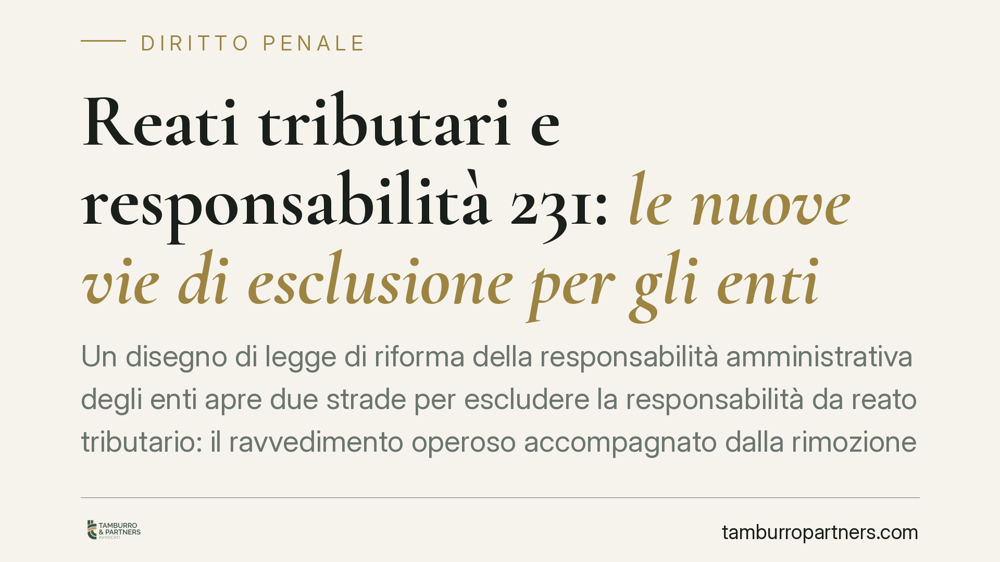

Reati tributari e responsabilità 231: le nuove vie di esclusione per gli enti
Un disegno di legge di riforma della responsabilità amministrativa degli enti apre due strade per escludere la responsabilità da reato tributario: il ravvedimento operoso accompagnato dalla rimozione delle carenze organizzative e la non punibilità per particolare tenuità del fatto occasionale. Nessuna delle due opera in automatico. Vediamo perché conta per le imprese e cosa comporta sul piano organizzativo.

Il contesto
Dal 2019 gli enti rispondono anche di alcuni reati tributari. L'art. 25-quinquiesdecies del D.lgs. 231/2001 ha inserito nel catalogo degli illeciti presupposto le fattispecie più gravi previste dal D.lgs. 74/2000: dalla dichiarazione fraudolenta all'emissione di fatture per operazioni inesistenti, fino all'occultamento o distruzione di documenti contabili.
In concreto, quando un amministratore o un dirigente commette uno di questi reati nell'interesse o a vantaggio della società, accanto alla responsabilità penale della persona fisica si affianca quella dell'ente, con sanzioni pecuniarie commisurate per quote e, nei casi più seri, misure interdittive. Il disegno di legge approvato dal Consiglio dei ministri interviene proprio su questo snodo, prevedendo meccanismi di esclusione della responsabilità.
Inquadramento normativo
Il testo in esame delinea due vie distinte.
La prima ruota attorno al ravvedimento operoso. Non basta, però, sanare il debito tributario versando imposte, sanzioni e interessi. La riforma richiede un elemento ulteriore: la rimozione delle carenze organizzative che hanno reso possibile il reato. In altri termini, l'ente deve dimostrare di aver corretto il modello organizzativo (il "modello 231" di cui all'art. 6 del decreto) e i presidi interni che si sono rivelati inadeguati. È la logica di fondo della responsabilità 231: ciò che si rimprovera all'ente non è il fatto in sé, ma la cosiddetta *colpa di organizzazione*.
La seconda via richiama l'istituto della particolare tenuità del fatto, modellato sull'art. 131-bis del codice penale. Qui l'esclusione poggia su due requisiti congiunti: la tenuità dell'offesa e l'occasionalità dell'illecito. Se la condotta è isolata e di modesto disvalore, l'ente può andare esente da responsabilità.
Va letto con attenzione anche il rapporto con l'art. 8 del D.lgs. 231/2001, che già oggi disciplina l'autonomia della responsabilità dell'ente rispetto a quella della persona fisica: le nuove cause di esclusione si inseriscono in quel quadro, senza sovvertirlo.
Nessun automatismo
È il punto da sottolineare. Né il ravvedimento né la tenuità operano in via automatica. Il giudice conserva un margine di valutazione: dovrà accertare in concreto che le carenze siano state effettivamente rimosse e che l'illecito sia davvero occasionale e di scarso rilievo.
Per l'impresa questo significa che il versamento del dovuto, da solo, non chiude la partita 231. Serve un intervento documentato sull'assetto organizzativo. E l'occasionalità va provata: una condotta inserita in una prassi ripetuta difficilmente supererà il vaglio della tenuità.
Implicazioni pratiche
Per le società e i loro amministratori il messaggio è duplice.
Da un lato, si apre uno spazio di difesa che prima non esisteva con questa chiarezza: chi reagisce tempestivamente e sistema le falle organizzative può ottenere l'esclusione della responsabilità dell'ente.
Dall'altro, cresce il peso del modello organizzativo. Un modello aggiornato, con presidi fiscali reali e non meramente cartolari, diventa l'elemento su cui si gioca la possibilità stessa di accedere al ravvedimento con effetto esimente. Un modello generico o mai manutenuto rischia di rendere arduo dimostrare la "rimozione delle carenze".
Anche la tracciabilità delle decisioni fiscali assume rilievo: poter ricostruire che un errore è stato isolato, e non frutto di una politica aziendale, può fare la differenza sul piano dell'occasionalità.
Cosa fare in concreto
- Rivedete il modello 231 con specifica attenzione all'area fiscale: individuate i processi a rischio (dichiarazioni, fatturazione, gestione documentale) e verificate l'effettività dei controlli.
- Rafforzate i presidi contabili e il ruolo dell'Organismo di Vigilanza, documentando le verifiche svolte e gli interventi correttivi.
- Agite tempestivamente in caso di irregolarità emerse: valutate il ravvedimento sul piano tributario e, parallelamente, intervenite sulle carenze organizzative.
- Conservate le evidenze delle correzioni adottate: decisioni assunte, date, soggetti coinvolti. Serviranno a dimostrare la rimozione delle carenze.
- Non date per scontato alcun esito automatico: consigliamo di affrontare ogni contestazione con una strategia difensiva costruita sul caso concreto.
Una riflessione finale
La riforma, se confermata nel suo impianto, premia l'organizzazione che reagisce e si corregge. È un'occasione per rileggere i propri modelli non come adempimento formale, ma come strumento di tutela sostanziale. Il momento per intervenire è prima del controllo, non dopo.
Contributo informativo a cura di Tamburro & Partners - Avv. Giuseppe Tamburro. Non costituisce parere legale.
Ogni condominio ha una storia a sé.
Se gestisci un'amministrazione e vuoi un confronto su una specifica questione condominiale, scrivi allo studio. Ti rispondiamo entro un giorno lavorativo.